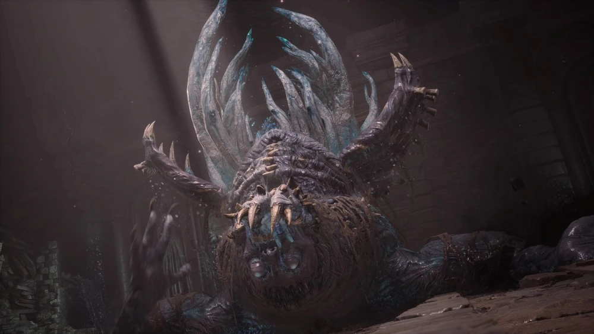
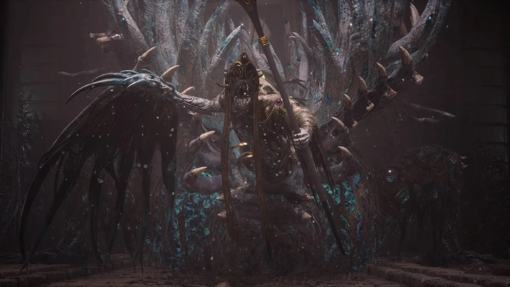

Fallen Archbishop Andreus
The Mutated Cleric
A grotesque monstrosity heavily mutated by the Petrification Disease. Once a revered leader of the St. Frangelico Cathedral, he embraced the plague as a divine blessing. The disease consumed his humanity entirely, transforming him into a massive, two-faced beast driven by blind faith and hunger.
Combat Tips
In Phase 1, focus on deflecting his heavy arm slams and tongue swipes. The real trick is in Phase 2: a fast-striking serpent creature emerges from his backside. Instead of fighting the unpredictable new face, run completely around him to fight his original, slower Phase 1 body. When he charges his massive blue Ergo laser, sprint as far to the side as possible.
Combat Stats
- Type: Carcass
- Weakness: Fire
- Resistance: Acid
- Location: St. Frangelico Cathedral Chapel: Archbishop's Altar
- Summon: Specter highly recommended
- Drop: Twisted Angel's Ergo